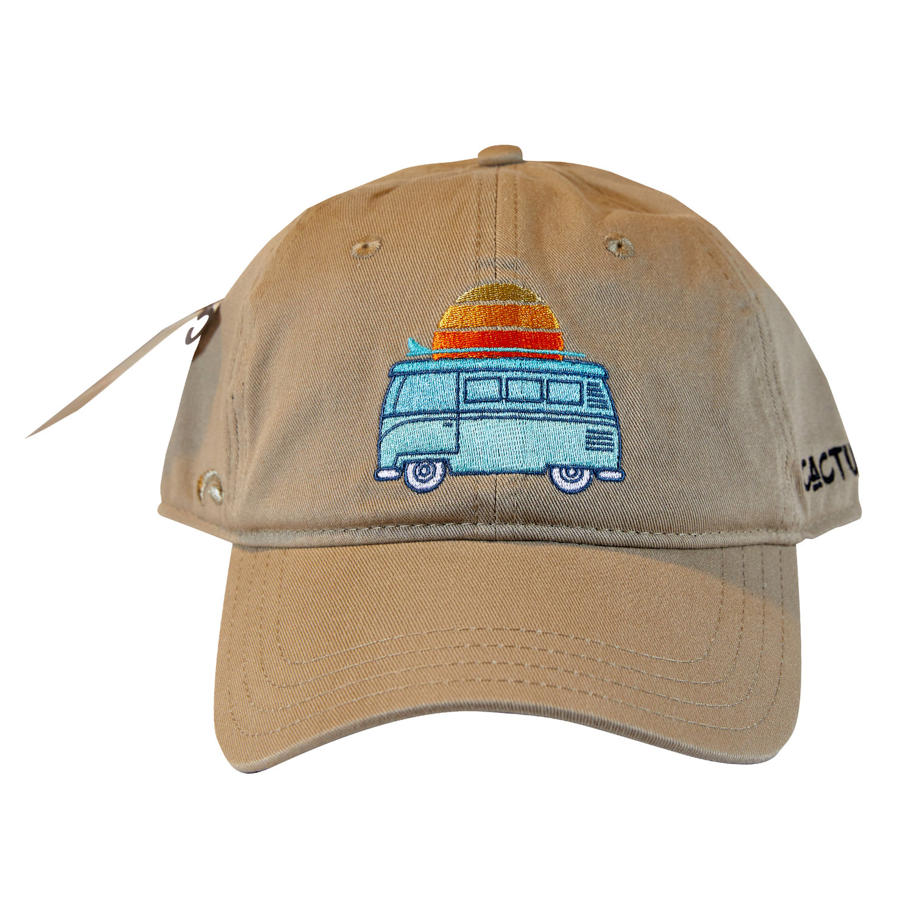
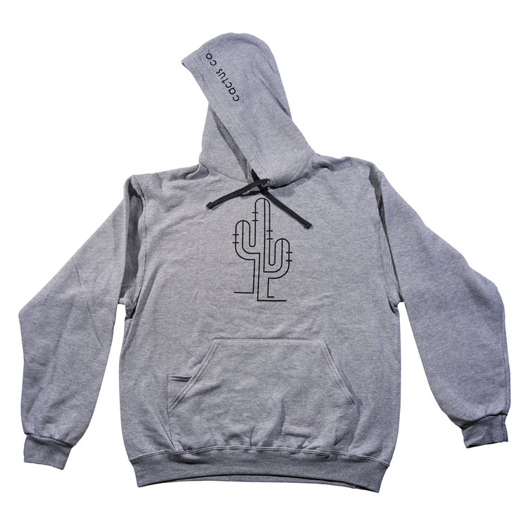

WHAT'S NEW WITH US
Gildan Shirts
Gildan is one of the world's largest vertically integrated manufacturers of apparel and socks. Gildan uses cotton grown in the USA, which represents the best combination of quality and value for Gildan cotton and cotton blended products. Since 2009, Gildan has proudly displayed the cotton USA mark, licensed by cotton council international, on consumer's product packaging and shipping materials. More ...

The Dad Hat
The dad hat has become a staple in many hat lovers collections, and for good reason. The soft, unstructured cotton creates an incredibly comfortable fit that will only get better with age. As you wear it more the hat will break in, be careful though you might never want to take it off. The simple Mountain embroidery adds just a bit of personality for the true lover of the outdoors or someone who enjoys the outdoors from a distance. More ...

Russel Sweatshirts
The Russell Athletic Dri-Power Fleece Sweatshirt will keep you warm and performing your best. Made with medium-weight fleece, featuring our signature Dri-Power moisture wicking technology to keep body heat in so you can stay warm and dry. More ...